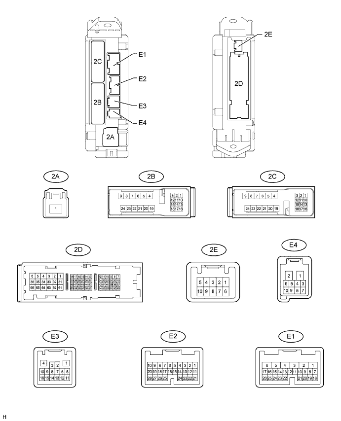
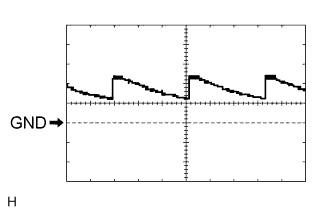
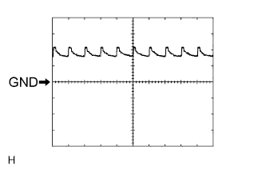
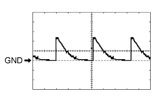
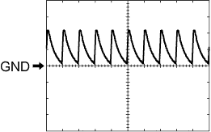

WIRELESS DOOR LOCK CONTROL SYSTEM > TERMINALS OF ECU |
| CHECK MAIN BODY ECU (COWL SIDE JUNCTION BLOCK LH) |

Disconnect the 2A, 2D and E3 ECU connectors.
Measure the resistance and voltage according to value(s) in the table below.
| Terminal No. (Symbol) | Wiring Color | Terminal Description | Condition | Specified Condition |
| 2D-62 (GND2) - Body ground | W-B - Body ground | Ground | Always | Below 1 Ω |
| E3-1 (GND3) - Body ground | BR - Body ground | Ground | Always | Below 1 Ω |
| 2A-1 (ACC) - 2D-62 (GND2) | GR - W-B | ACC power supply | Engine switch on (ACC) | 11 to 14 V |
| 2A-1 (IG) - 2D-62 (GND2) | B - W-B | IG power supply | Engine switch on (IG) | 11 to 14 V |
Reconnect the 2A, 2D and E3 ECU connectors.
Measure the voltage according to the value(s) in the table below.
| Terminal No. (Symbol) | Wiring Color | Terminal Description | Condition | Specified Condition |
| E1-24 (DCTY) - Body ground | L - Body ground | Driver side door courtesy light switch input | Driver side door open | Below 1 Ω |
| Driver side door closed | 10 kΩ or higher | |||
| E2-21 (PCTY) - Body ground | Y - Body ground | Passenger side door courtesy light switch input | Passenger side door open | Below 1 Ω |
| Passenger side door closed | 10 kΩ or higher | |||
| 2C-2 (LCTY) - Body ground | W - Body ground | Rear side door LH courtesy light switch input | Rear side door LH open | Below 1 Ω |
| Rear side door LH closed | 10 kΩ or higher | |||
| E2-7 (RCTY) - Body ground | G - Body ground | Rear side door RH courtesy light switch input | Rear side door RH open | Below 1 Ω |
| Rear side door RH closed | 10 kΩ or higher | |||
| E2-25 (BCTY) - Body ground | w - Body ground | Back door courtesy light switch input | Back door open | Below 1 Ω |
| Back door closed | 10 kΩ or higher | |||
| E3-4 (HAZ) - Body ground | O - Body ground | Turn signal light drive | Hazard warning signal switch on | Pulse generation |
| Hazard warning signal switch off | Below 1 V | |||
| 2B-16 (DIM) - 2D-62 (GND2)* | R-G - W-B | Headlight low drive | Headlight dimmer switch low | 11 to 14 V |
| 2B-18 (HRLY) - 2D-62 (GND2)* | L - W-B | Headlight (high) drive | Headlight dimmer switch high | 11 to 14 V |
| 2A-1 (TRLY) - 2D-62 (GND2)* | B - W-B | Taillight drive | Headlight dimmer switch tail | 11 to 14 V |
 |
Using an oscilloscope, check waveform 1.
| Item | Content |
| Terminal No. (Symbol) | E1-24 (DCTY) - Body ground |
| Tool Setting | 5 V/DIV., 20 ms/DIV. |
| Condition | Engine switch off, and driver side door courtesy switch off |
 |
Using an oscilloscope, check waveform 2.
| Item | Content |
| Terminal No. (Symbol) | E1-24 (DCTY) - Body ground |
| Tool Setting | 5 V/DIV., 20 ms/DIV. |
| Condition | Engine switch off, and driver side door courtesy switch off |
 |
Using an oscilloscope, check waveform 3.
| Item | Content |
| Terminal No. (Symbol) | E2-21 (PCTY) - Body ground |
| Tool Setting | 5 V/DIV., 20 ms/DIV. |
| Condition | Engine switch off, and passenger side door courtesy switch off |
 |
Using an oscilloscope, check waveform 4.
| Item | Content |
| Terminal No. (Symbol) | E2-21 (PCTY) - Body ground |
| Tool Setting | 5 V/DIV., 20 ms/DIV. |
| Condition | Engine switch off, and passenger side door courtesy switch off |
Using an oscilloscope, check waveform 5.
| Item | Content |
| Terminal No. (Symbol) | 2C-2 (LCTY) - Body ground |
| Tool Setting | 5 V/DIV., 20 ms/DIV. |
| Condition | Engine switch off, and rear LH side door courtesy switch off |
Using an oscilloscope, check waveform 6.
| Item | Content |
| Terminal No. (Symbol) | 2C-2 (LCTY) - Body ground |
| Tool Setting | 5 V/DIV., 20 ms/DIV. |
| Condition | Engine switch off, and rear LH side door courtesy switch off |
Using an oscilloscope, check waveform 7.
| Item | Content |
| Terminal No. (Symbol) | E2-7 (RCTY) - Body ground |
| Tool Setting | 5 V/DIV., 20 ms/DIV. |
| Condition | Engine switch off, and rear RH side door courtesy switch off |
Using an oscilloscope, check waveform 8.
| Item | Content |
| Terminal No. (Symbol) | E2-7 (RCTY) - Body ground |
| Tool Setting | 5 V/DIV., 20 ms/DIV. |
| Condition | Engine switch off, and rear RH side door courtesy switch off |
Using an oscilloscope, check waveform 9.
| Item | Content |
| Terminal No. (Symbol) | E2-25 (BCTY) - Body ground |
| Tool Setting | 5 V/DIV., 20 ms/DIV. |
| Condition | Engine switch off, and Back door closed |
Using an oscilloscope, check waveform 10.
| Item | Content |
| Terminal No. (Symbol) | E2-25 (BCTY) - Body ground |
| Tool Setting | 5 V/DIV., 20 ms/DIV. |
| Condition | Engine switch off, and Back door closed |
| CHECK CERTIFICATION ECU (SMART KEY ECU ASSEMBLY) |

Disconnect the E29 and E30 ECU connectors.
Measure the resistance and voltage according to the value(s) in the table below.
| Terminal No. (Symbol) | Wiring Color | Terminal Description | Condition | Specified Condition |
| E29-17 (E) - Body ground | W-B - Body ground | Ground | Always | Below 1 Ω |
| E29-1 (+B1) - L15-17 (E) | B - W-B | Battery power supply | Always | 11 to 14 V |
| E29-18 (IG) - L15-17 (E) | B - W-B | IG power supply | Engine switch on (IG) | 11 to 14 V |
| Engine switch off | Below 1 V |
Reconnect the E29 and E30 ECU connectors.
Measure the voltage according to the value(s) in the table below.
| Terminal No. (Symbol) | Wiring Color | Terminal Description | Condition | Specified Condition |
| E29-39 (RSSI) - L29-17 (E) | L - W-B | Door control receiver output signal | Engine switch off, all doors closed and transmitter switch not pressed | 11 to 14 V |
| Engine switch off, all doors closed and transmitter switch pressed | Below 1 V | |||
| E29-38 (RDA) - L15-17 (E) | LG - W-B | Door control receiver output signal | Engine switch off, all doors closed and transmitter switch not pressed → switch pressed → switch not pressed | 4.6 to 5.4 V → Below 2 V → 4.6 to 5.4 V |
| E29-29 (RCO) - L15-17 (E) | B - W-B | Supply battery to door control receiver | Engine switch off, all doors closed and transmitter switch pressed | 4.6 to 5.4 V |
| E29-21 (BZR) - Body ground* | LG - Body ground | Wireless door lock buzzer output | Wireless door lock buzzer ON | 11 to 14 V |
| E29-21 (BZR) - Body ground* | LG - Body ground | Wireless door lock buzzer output | Wireless door lock buzzer OFF | Below 1 V |
| CHECK DOOR CONTROL RECEIVER |
Disconnect the L21 receiver connector.
Measure the resistance and voltage according to the value(s) in the table below.
| Terminal No. (Symbol) | Wiring Color | Terminal Description | Condition | Specified Condition |
| L21-1 (GND) - Body ground | W-B - Body ground | Ground | Always | Below 1 Ω |
| L21-4 (+5) - Body ground | B - Body ground | Battery power supply | Always | 4.6 to 5.4 V |